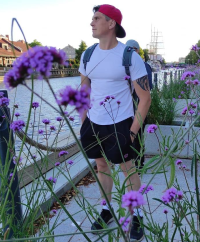

Andrius Petrosius
Web Developer

Summary
Have a good experience with computers,programs from childhood.
Last 2.5 months studying at home on coding.
Education
Udemy The Complete Web Development Bootcamp
Work experience
Production Supervisor-Abp Ireland
August 2004-July 2022
- Employed effective safety initiatives,
resulting in no incidents during my tenure
- Executed lean practices,which reduced waste by 40%
- Improvement projects focused on increasingefficiency,
cutting costs,resolving quality issues.
Skills
- Problem-solving
- Communication
- Attention to detail
- Adaptability>
Awards and Certifications
- Lean Awards on saving water and enviroment. (September 2020)
- Employee of the Month - ABp Ireland (July 2021)
Other